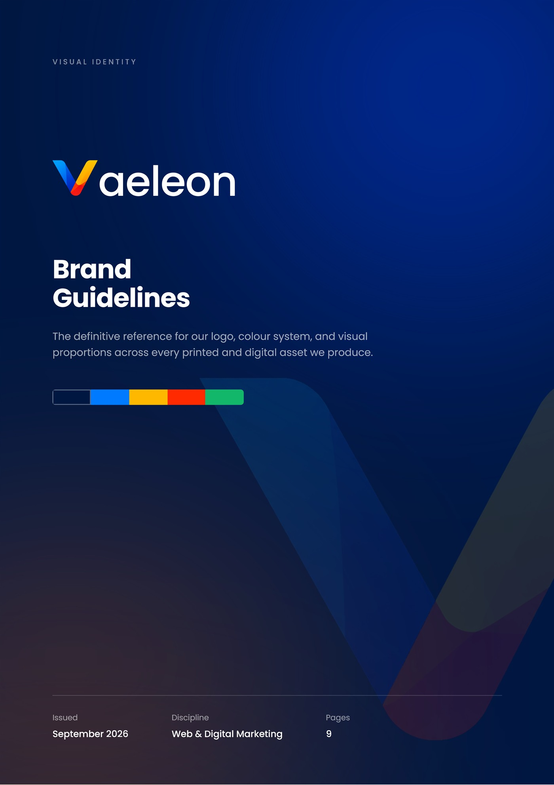

Digital marketing
Services, results and a clear route to getting in touch.
At Vaeleon I managed a team of five, reporting to the CEO: allocating work across web and design projects, delivering WordPress builds for clients, and overseeing brand and graphic work from the brief through to launch.
Agreeing what the client needs
The site and its visuals
Online, on hosting and a domain
Leading the team. I led a team of five, allocating work across web and design projects and reporting to the CEO.
Building the sites. I delivered WordPress builds for clients, including theme and plugin setup, hosting and domains.
Owning the visuals. I oversaw brand and graphic work from the client's brief through to launch.
Sketches of the kinds of site the team offered, from agencies and schools to companies and shops.
Services, results and a clear route to getting in touch.
News, admissions, programmes and the school calendar.
Who the company is, what it does and who it works with.
A catalogue, a cart and a simple path to checkout.
One offer, one page, one action.
Work first, with room for the story behind it.

Case study Nine pages of brand guidelines Logo, a four-colour palette with a neutral scale, binding contrast rules and colour proportions. Read the case study →